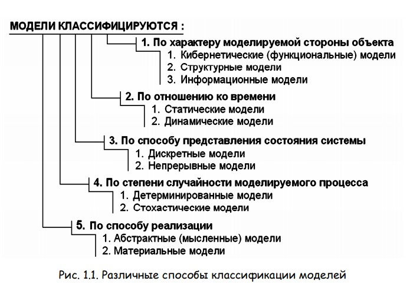

Введение
Вводится понятие модели, анализируются различные классы моделей, а также связь моделирования с общей теорией систем. Обсуждается численное, статистическое и имитационное моделирование, его место в системе других методов познания. Рассматриваются различные классификации компьютерных моделей и области их применения.
В процессе изучения окружающего мира субъекту познания противостоит исследуемая часть объективной реальности – объект познания. Ученый, используя эмпирические методы познания (наблюдение и эксперимент), устанавливает факты, характеризующие объект. Элементарные факты обобщаются и формулируются эмпирические законы. Следующий шаг состоит в развитии теории и построении теоретической модели, объясняющей поведение объекта и учитывающей наиболее существенные факторы, влияющие на изучаемое явление. Эта теоретическая модель должна быть логичной и соответствовать установленным фактам. Можно считать, что любая наука представляет собой теоретическую модель определенной части окружающей действительности.
Часто в процессе познания реальный объект O заменяется некоторым другим идеальным (воображаемым) или материальным объектом M , несущим изучаемые черты исследуемого объекта O и называемым моделью. Эта модель подвергается исследованию: на нее оказывают различные воздействия, варьируют параметры и начальные условия и вы- ясняют, как изменяется ее поведение. Результаты исследования модели M переносят на объект исследования O, сопоставляют с имеющимися эмпирическими данными и т. д.
Таким образом, модель – это материальный или идеальный объект, замещающий исследуемую систему и адекватным образом отображающий ее существенные стороны. Модель M должна в чем–то повторять исследуемый процесс или объект O со степенью соответствия, позволяющей изучить объект–оригинал O. Чтобы результаты моделирования можно было бы перенести на исследуемый объект, модель должна обладать свойством адекватности. Преимущество подмены исследуемого объекта его моделью в том, что часто модели проще, дешевле и безопаснее исследовать. Действительно, чтобы создать самолет, следует построить теоретическую модель, нарисовать чертеж, выполнить соответствующие расчеты, изготовить его уменьшенную копию, исследовать ее в аэродинамической трубе и т. д.
По способу реализации различают: 1. Абстрактные модели, то есть мысленные модели, существующие только в нашем воображении. Например, структура алгоритма, которая может быть представлена с помощью блок–схемы, функциональная зависимость, дифференциальное уравнение, описывающее некоторый процесс. К абстрактным моделям также можно отнести различные графические модели, схемы, структуры, а также анимации. 2. Материальные (физические) модели представляют собой неподвижные макеты либо действующие устройства, функционирующие в чем–то подобно исследуемому объекту. Например, модель молекулы из шариков, макет атомной подводной лодки, действующая модель генератора переменного тока, двигателя и т. д. Реальное моделирование предусматривает построение материальной модели объекта и выполнение с ней серии экспериментов. Например, для изучения движения Майер Р. В. Компьютерное моделирование: учеб.-метод. пособие для студентов педвузов 16 подводной лодки в воде строят ее уменьшенную копию и моделируют течение с помощью гидродинамической трубы.
Нас будут интересовать абстрактные модели, которые в свою очередь подразделяются на вербальные, математические и компьютерные. К вербальным или текстовым моделям относятся последовательности утверждений на естественном или формализованном языке, описывающие объект познания. Математические модели образуют широкий класс знаковых моделей, в которых используются математические действия и операторы. Часто они представляют собой систему алгебраических или дифференциальных уравнений. Компьютерные модели представляют собой алгоритм или компьютерную программу, решающую систему логических, алгебраических или дифференциальных уравнений и имитирующую поведение исследуемой системы. Иногда мысленное моделирование подразделяют на: 1. Наглядное, – предполагает создание воображаемого образа, мысленного макета, соответствующих исследуемому объекту на основе предположений о протекающем процессе, или по аналогии с ним. 2. Символическое, – заключается в создании логического объекта на основе системы специальных символов; подразделяется на языковое (на основе тезауруса основных понятий) и знаковое. 3. Математическое, – состоит в установлении соответствия объекту исследования некоторого математического объекта; подразделяется на аналитическое, имитационное и комбинированное. Аналитическое моделирование предполагает написание системы из алгебраических, дифференциальных, интегральных, конечно–разностных уравнений и логических условий. Для исследования аналитической модели могут быть использованы аналитический метод и численный метод. В последнее время численные методы реализуются на ЭВМ, поэтому компьютерное моделирование можно рассматривать как разновидность математического.
Нас будут интересовать абстрактные модели, которые в свою очередь подразделяются на вербальные, математические и компьютерные. К вербальным или текстовым моделям относятся последовательности утверждений на естественном или формализованном языке, описывающие объект познания. Математические модели образуют широкий класс знаковых моделей, в которых используются математические действия и операторы. Часто они представляют собой систему алгебраических или дифференциальных уравнений. Компьютерные модели представляют собой алгоритм или компьютерную программу, решающую систему логических, алгебраических или дифференциальных уравнений и имитирующую поведение исследуемой системы. Иногда мысленное моделирование подразделяют на: 1. Наглядное, – предполагает создание воображаемого образа, мысленного макета, соответствующих исследуемому объекту на основе предположений о протекающем процессе, или по аналогии с ним. 2. Символическое, – заключается в создании логического объекта на основе системы специальных символов; подразделяется на языковое (на основе тезауруса основных понятий) и знаковое. 3. Математическое, – состоит в установлении соответствия объекту исследования некоторого математического объекта; подразделяется на аналитическое, имитационное и комбинированное. Аналитическое моделирование предполагает написание системы из алгебраических, дифференциальных, интегральных, конечно–разностных уравнений и логических условий. Для исследования аналитической модели могут быть использованы аналитический метод и численный метод. В последнее время численные методы реализуются на ЭВМ, поэтому компьютерное моделирование можно рассматривать как разновидность математического.
Нас будут интересовать абстрактные модели, которые в свою очередь подразделяются на вербальные, математические и компьютерные. К вербальным или текстовым моделям относятся последовательности утверждений на естественном или формализованном языке, описывающие объект познания. Математические модели образуют широкий класс знаковых моделей, в которых используются математические действия и операторы. Часто они представляют собой систему алгебраических или дифференциальных уравнений. Компьютерные модели представляют собой алгоритм или компьютерную программу, решающую систему логических, алгебраических или дифференциальных уравнений и имитирующую поведение исследуемой системы. Иногда мысленное моделирование подразделяют на: 1. Наглядное, – предполагает создание воображаемого образа, мысленного макета, соответствующих исследуемому объекту на основе предположений о протекающем процессе, или по аналогии с ним. 2. Символическое, – заключается в создании логического объекта на основе системы специальных символов; подразделяется на языковое (на основе тезауруса основных понятий) и знаковое. 3. Математическое, – состоит в установлении соответствия объекту исследования некоторого математического объекта; подразделяется на аналитическое, имитационное и комбинированное. Аналитическое моделирование предполагает написание системы из алгебраических, дифференциальных, интегральных, конечно–разностных уравнений и логических условий. Для исследования аналитической модели могут быть использованы аналитический метод и численный метод. В последнее время численные методы реализуются на ЭВМ, поэтому компьютерное моделирование можно рассматривать как разновидность математического.
Выполнение лабораторной работы
Чтобы закрепить прочитанный вами теоретический материал, вам необходимо выполнить лабораторную работу, которая прикреплена: Лабораторная работа №1